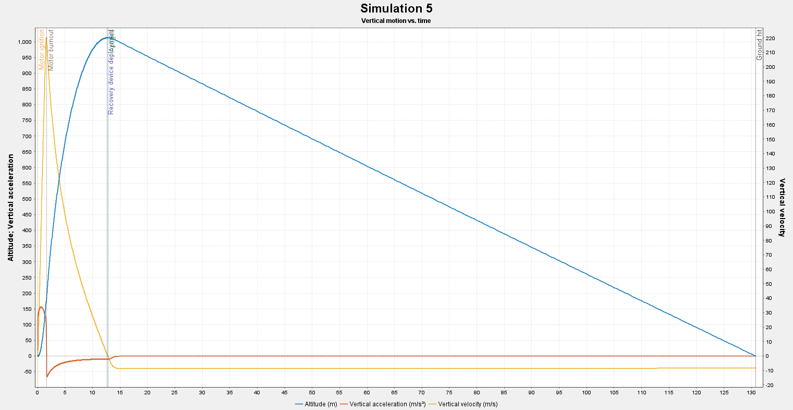
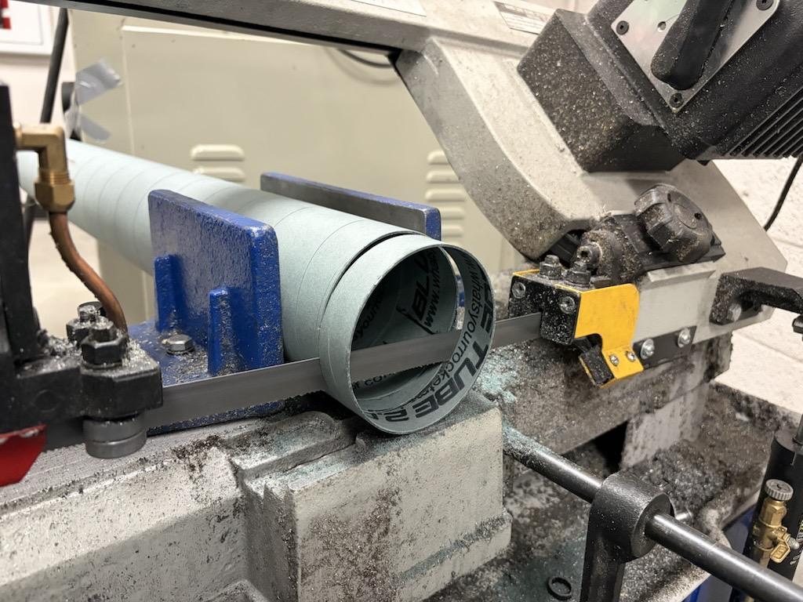

L2 Certification Rocket
Dual-Motor Cert Build — Design, Failure Analysis, and Rebuild
Overview
Built and flew a 4 inch diameter Blue Tube airframe rocket to certify both Level 1 and Level 2 with Tripoli, clearing the way to mix propellant and assemble the team's M2500 competition motor. The build used a 36" main parachute on a chute-release and ripcord dual-deploy setup, with no onboard avionics.
The L2 flight did not recover cleanly, and having no electronics meant I had no data to explain why. This page documents what failed, why, and how I am fixing it: a structural rebuild, a ground-test campaign, and a custom flight computer so the re-flight produces measured data instead of guesses.
Build
The kit came minimally prepped. General assembly used 5-minute epoxy throughout, with aerospace-grade epoxy specifically for the fin joints given the higher structural loads on a J-class flight.
Certification Flights
Level 1 — H550: Flown to a planned 491 m. Stability margin of 11.9%. Flight, deployment, and recovery all performed cleanly.
Level 2 — J425: Flown to a planned 1013 m. Stability margin of 9%. The rocket coned near apogee — most likely a combination of reduced stability margin at low velocity and wind gusts at the top of the flight — and then suffered a deployment failure: the upper and lower airframes fully separated when a recovery knot came undone, compounded by zippering along the ripcord path. With no onboard electronics and a difficult recovery area, the rocket wasn't recovered until a week later, by which point exposure to rain had warped the aft airframe.

Root Cause Analysis
The failure traced to two compounding issues rather than a motor or stability problem alone: an insecure recovery knot that allowed full separation, and ripcord zippering that likely followed the initial separation event. The lower stability margin on the L2 flight (9% vs. 11.9% on L1) plausibly contributed to the coning that preceded deployment, alongside wind conditions at apogee.
What I can't say yet: without onboard data, the order of events is inferred from the recovered hardware and the flight video. The re-flight data is meant to close that gap.
Failure → Corrective Action
| Failure | Likely cause | Corrective action |
|---|---|---|
| Airframe separation | Recovery knot came undone | Replace the knot with a mechanical connection and pull-test it to failure |
| Ripcord zippering | Cord path loaded the tube after separation | Reroute the cord and protect the tube edge; add a lower coupler for structural margin |
| Coning near apogee | 9% stability margin at low velocity plus wind gusts | Re-simulate the rebuilt configuration with gusts and increase the margin if needed |
| Week-long recovery, warped aft section | No tracking, difficult recovery area, rain exposure | Add a tracker and a data-logging flight computer |
| No data to diagnose the flight | No onboard avionics | Log altitude and acceleration on the re-flight, with a commercial altimeter as a cross-check |
Current Rebuild
The aft airframe section is being replaced, with an additional coupler added lower in the airframe for structural margin against a repeat separation. The damaged section is being cut on a bandsaw. Before cutting, I measure the warp so there is a record of how far the tube deformed.

Flight Computer
I'm designing a low-cost (~$20) flight computer PCB, both to get real deployment and flight data on the re-flight and as my first electronics project. I'm staging it so each step is proven before the next adds risk:
- Breadboard prototype. Dev board, barometer, IMU, and flash or SD logging. Goal: logged altitude data plotted from a real test.
- Custom PCB (data logger only). The same circuit moved into KiCad, fabricated, and bring-up tested. A commercial altimeter or the existing setup stays primary for deployment.
- Deployment channels (later revision). Add continuity-sensed pyro outputs only after the logger has passed repeated ground tests.

Verification Plan
Before re-flight, each fix gets a test, not just a description:
- Recovery hardware: pull-test knots and attachment points to failure and compare against the opening-shock load estimated for the 36" main.
- Ejection charges: size the charge from airframe volume and a pressure calculation, then ground-test the separation.
- Flight computer: pressure-change bench test (syringe or vacuum) and a swing test, with logged data plotted against expected values.
- Stability: re-run OpenRocket for the rebuilt configuration, including wind gusts and a Monte Carlo run, and adjust nose weight or fins if the margin is thin.
What I'd Do Differently
- Fly avionics from the start. A $20 logger would have turned a week of guessing into a data plot.
- Treat recovery connections as load-bearing parts: test them and don't trust a knot.
- Add tracking. A difficult recovery area and no tracker cost a week and damaged the airframe.
- Check stability margin against low-velocity and gust conditions, not only the nominal flight.
Progress Log
- Done L1 (H550) flown and recovered cleanly. Stability margin 11.9%.
- Done L2 (J425) flown. Coning near apogee, recovery knot failure, ripcord zippering. Rocket recovered a week later with a warped aft section.
- Done Root cause analysis written; rebuild started with a replacement aft section and added lower coupler.
- [date] Warped section measured and cut on the bandsaw.
- [date] Breadboard flight computer logging altitude data.
- [date] Flight computer PCB ordered, received, and tested.
- [date] Ground tests complete: knot pull test, ejection test, bench test.
- [date] Re-flight, with measured data overlaid on the OpenRocket prediction.